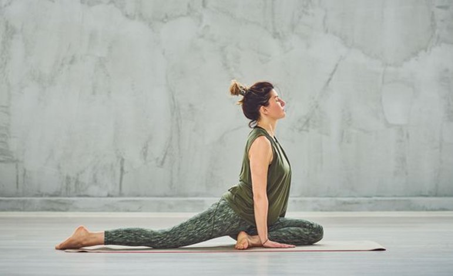

5 mẹo bạn có thể thử ngay hôm nay
1. Chườm nóng vùng bụng dưới
Nhiệt độ ấm giúp giãn cơ tử cung, giảm co thắt đáng kể. Bạn có thể dùng túi chườm nóng, chai nước ấm bọc khăn, hoặc miếng dán nhiệt (bán ở hầu hết các hiệu thuốc). Đặt lên bụng dưới khoảng 15-20 phút là cảm thấy dễ thở hơn nhiều rồi đó!
💡 Mẹo nhanh: Chai nước nóng bọc trong khăn mỏng — tiện lợi ngay tại trường!2. Xoa bụng nhẹ nhàng theo chiều kim đồng hồ
Dùng lòng bàn tay xoa nhẹ vùng bụng dưới theo chiều kim đồng hồ trong 3-5 phút. Động tác này kích thích lưu thông máu và giúp cơ thư giãn. Bạn có thể làm ngay trong nhà vệ sinh hoặc trên ghế ngồi học mà không ai biết đâu!
💡 Kết hợp với hít thở sâu sẽ hiệu quả hơn nhé!3. Uống trà gừng hoặc trà hoa cúc ấm
Gừng có đặc tính chống viêm tự nhiên, giúp giảm đau hiệu quả tương đương một số thuốc không kê đơn (theo nghiên cứu). Hoa cúc giúp thư giãn cơ và giảm lo lắng. Pha một ly nhỏ mang vào lớp — vừa ấm bụng vừa thơm!
💡 Tránh cà phê và nước lạnh trong những ngày này nhé bạn!4. Đi bộ nhẹ hoặc vươn vai giữa giờ
Nghe có vẻ ngược đời nhưng đúng đấy — vận động nhẹ giúp cơ thể tiết endorphin, chất giảm đau tự nhiên. Bạn không cần tập thể dục gắng sức, chỉ cần đứng dậy đi vòng vòng hành lang 5 phút hoặc vươn vai tại chỗ là đã thấy bớt hơn rồi!
💡 Tư thế child's pose trong yoga cũng giảm đau bụng rất tốt!5. Hít thở sâu theo nhịp 4-7-8
Hít vào 4 giây → Nín thở 7 giây → Thở ra chậm 8 giây. Lặp lại 3-4 lần. Kỹ thuật này kích hoạt hệ thần kinh phó giao cảm, giúp cơ thể thư giãn, giảm cảm giác đau và lo lắng rất nhanh. Bạn có thể làm ngay tại bàn học mà không ai để ý!
💡 Vừa giảm đau vừa giúp bạn tập trung học tốt hơn!
Nếu cơn đau quá dữ dội, kéo dài bất thường, hoặc kèm theo sốt, ra máu nhiều bất thường — bạn nên đến gặp bác sĩ phụ khoa để được kiểm tra nhé. Đau kinh nặng đôi khi là dấu hiệu của các tình trạng cần được điều trị.
Một điều nhỏ mình muốn nói với bạn
Đau bụng kinh không phải "chuyện nhỏ" hay "cứ chịu thôi". Cơ thể bạn đang làm việc rất chăm chỉ mỗi tháng — và bạn hoàn toàn xứng đáng được chăm sóc tử tế.
Lần sau nếu kỳ về bất ngờ khi đang ở trường, nhớ ghé hộp Care Box trong nhà vệ sinh nữ — hộp luôn ở đó để "cứu trợ" bạn nhé!